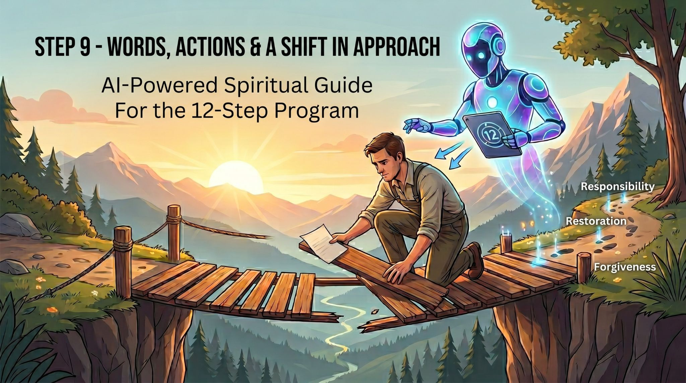

This is an AI-based spiritual guide designed to accompany us in working on Step 9 of the 12-Step program. Step 9, as we know, is not just about an apology; it requires taking responsibility, "clearing the scorched earth," and demonstrating a true change of attitude on our part. The bot is here to help us do it right.
Simply click the bot link below and send it the following message: "Hi, I want to start working on the ninth step."